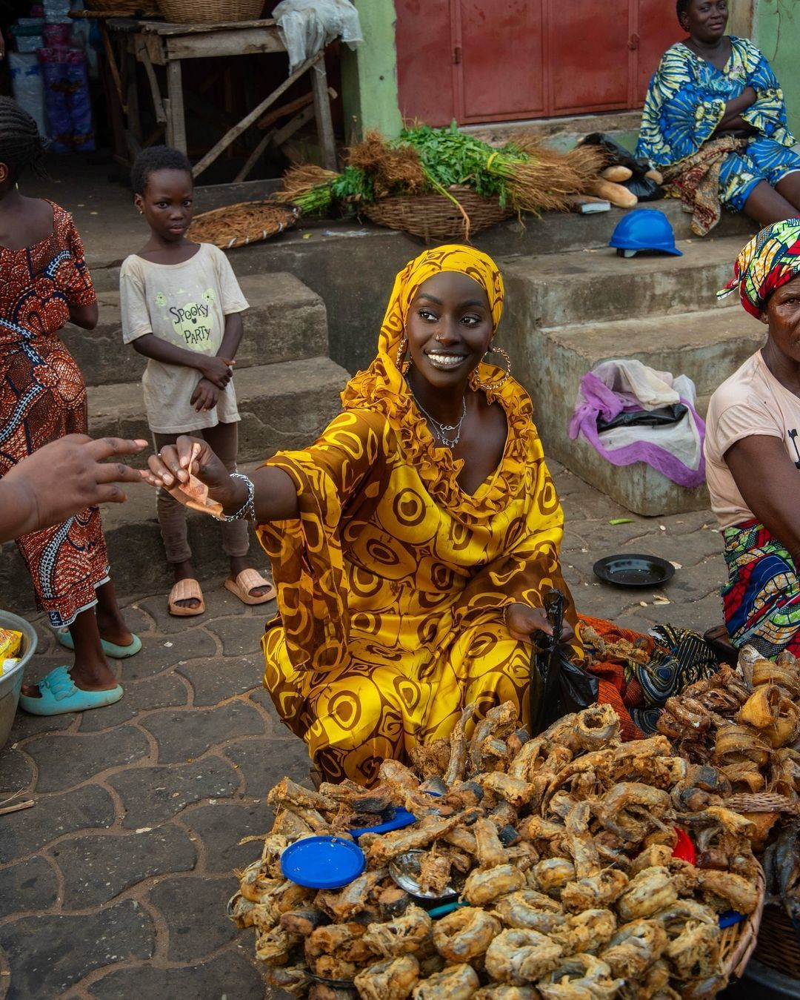
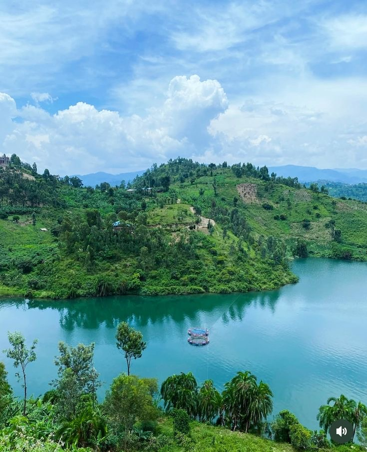
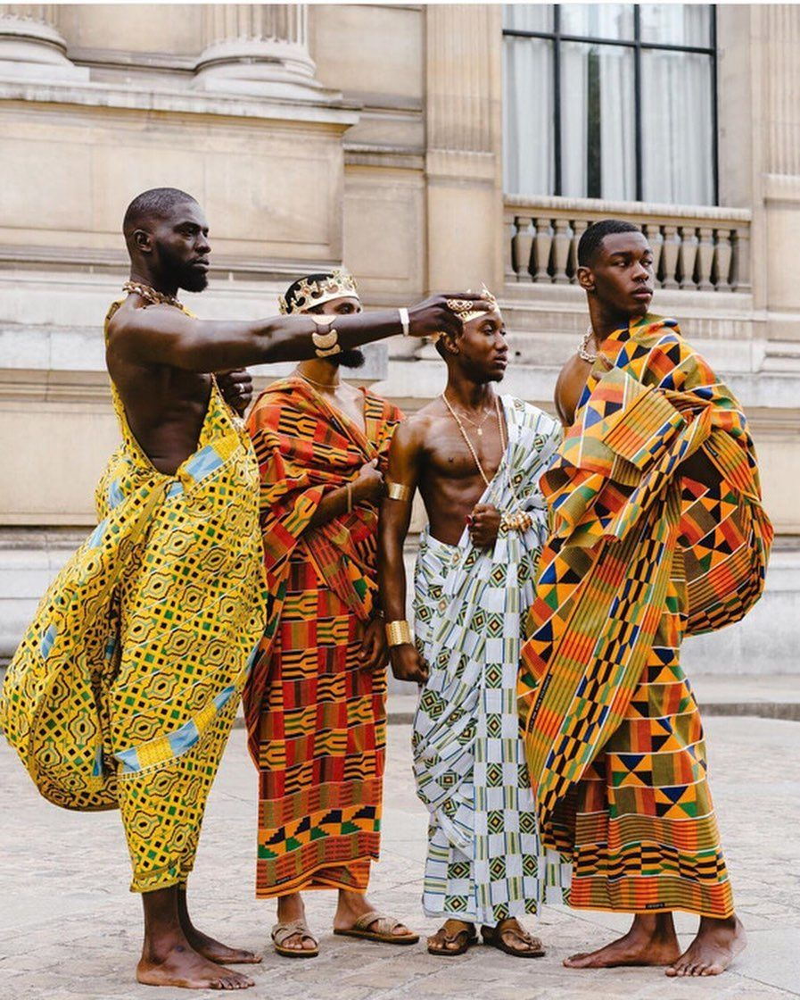
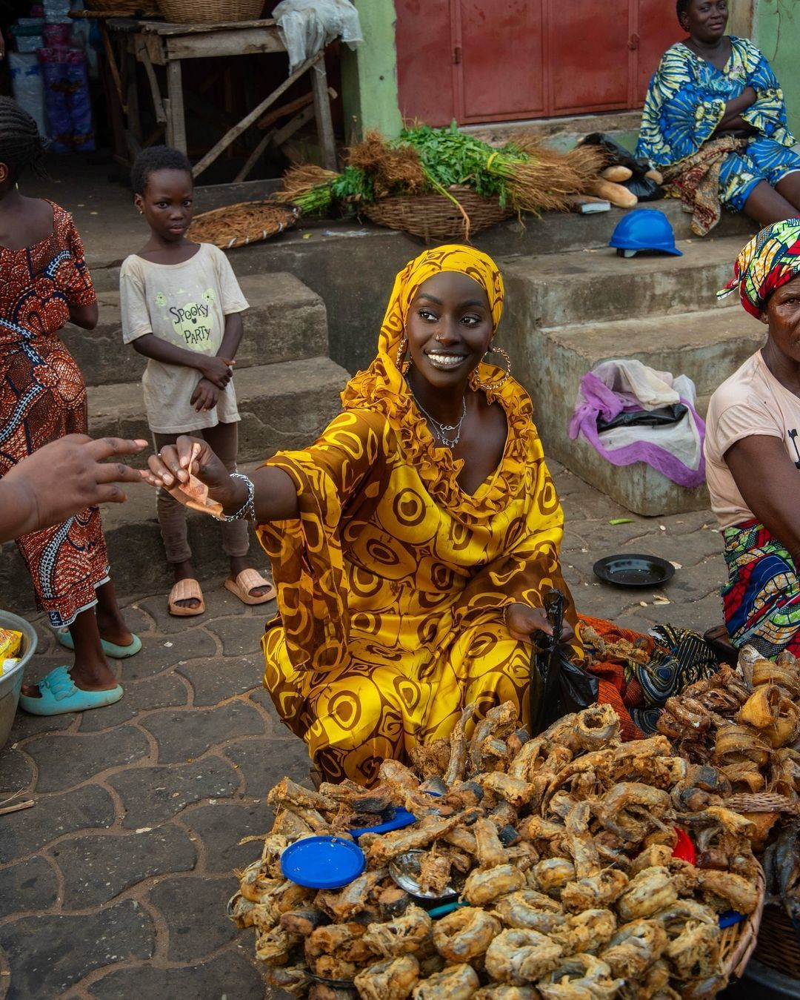
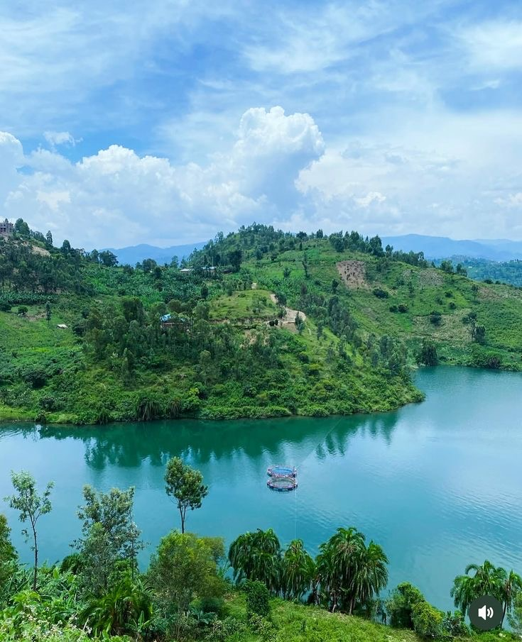
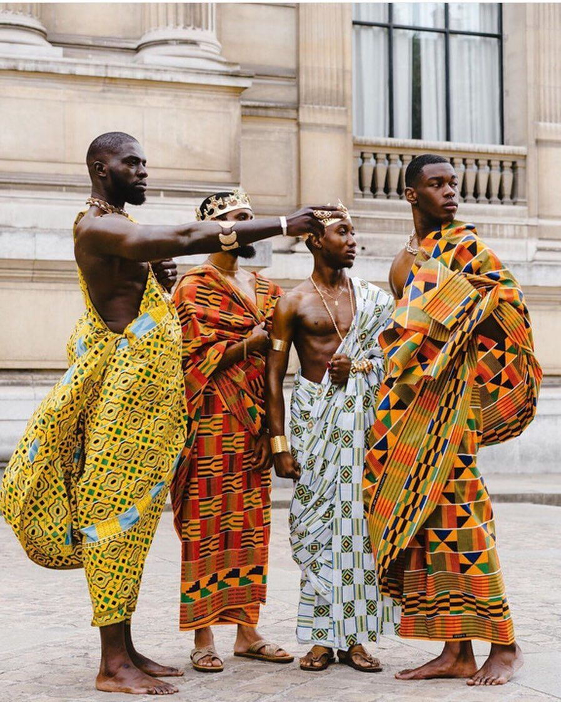
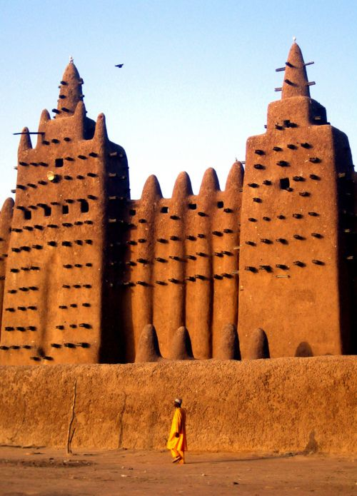
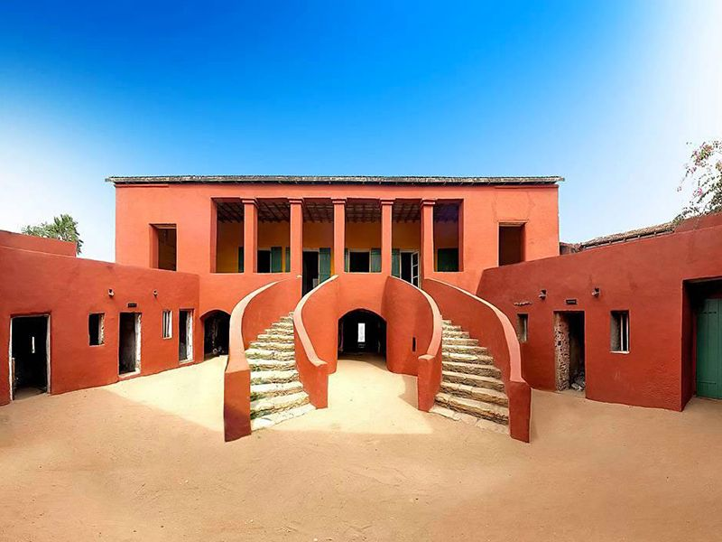
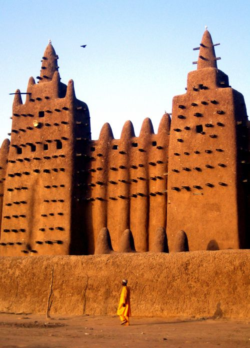
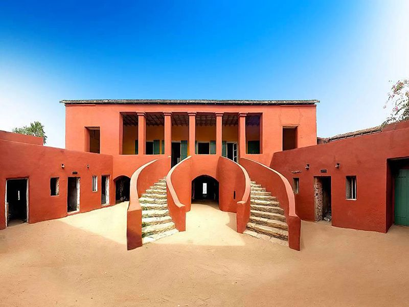

Discover the rhythm of the motherland, where every color tells a story, every beat holds a memory, and every soul shines with pride. This is more than a place it is a celebration of who we are.
Across deserts and forests, cities and villages, we speak in many tongues, dance to different rhythms, and wear colors unique to our tribes yet we are one. Bound not by sameness, but by shared spirit. Our strength lies in our differences, and our beauty in how we rise together. This is Africa many voices, one song.

 



Walk through the echoes of time and uncover the stories carved into stone, sung through generations, and passed down in firelight tales. Between Ambul Simble Temples (Egypt), built by Ramses II for his queen Nefertari and Hathor; or the pyramids which still a mystery; or the first university in the world located in Mali; or even the house of slaves on the island of Gorée. Come, discover the journey that made us who we are